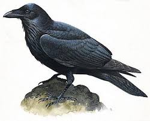
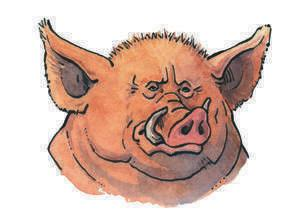
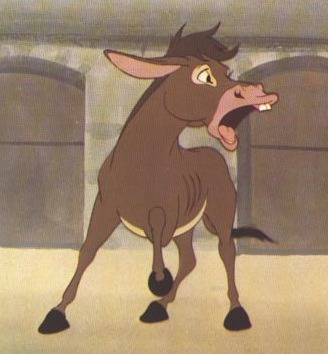
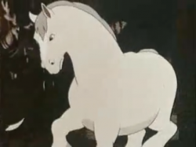
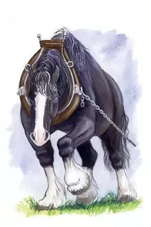
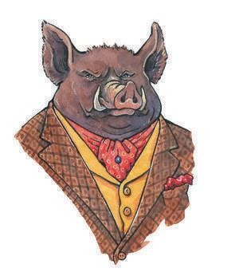

- The Main Characters in the Story are: Napoleon, Boxer, Mollie, Benjamin, Old Major and Moses.
- Napoleon is one of the main character because he's the one that seized all the power and according to the other animals "became a human".
- Boxer is another of the main characters because he represents the naive working class that says that "Boxer is Always Right" and that he needs to work for him and the future of the community.
- In the first few chapters that Mollie was in the farm she became one of the main characters because she represented the aristocrats or the rich people; she didn't want to work and also didn't wanna wake up early to work; she ended up leaving the farm.
- Even though Benjamin wasn't present most of the novel he still played an interesting role because he was one of the only animals beside the pigs that could read and write, this is important because it lets you know that even the smart people wouldn't rebel against the pigs.
- The most important character in the book is Old Major even though he died in the first chapter he was the one that brought the idea of communism and the revolution to the animals.
- Moses was also a main character since he brought religion to the farm he was there at the end of the book paid by the pigs so that he would spread religion so the animals wouldn't pay much attention to the pigs.
Moses The Raven- Religious
Old Major- Communist Idealist
Benjamin- The Intellectual
Mollie- The Rich
Boxer- The Working Class
Napoleon- The Leader





